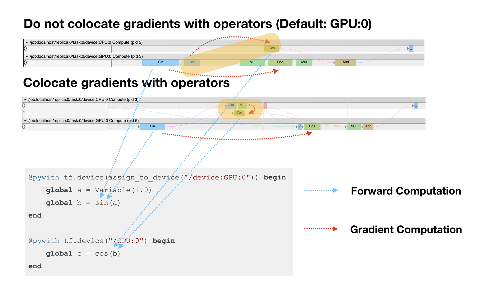

Parallel Computing
Manually Place Operators on Devices
ADCME backend TensorFlow treats each operator as the smallest computation unit. Users are allowed to manually assign the device locations for each operator. This is usually done with the @pywith tf.device("/cpu:0") syntax. For example, if we want to create a variable a and compute $sin(a)$ on GPU:0 we can write
@pywith tf.device("/GPU:0") begin
global a = Variable(1.0)
global b = sin(a)
endCustom Device Placement Functions
This syntax is useful and simple for placing operators on certain GPU devices without changing original codes. However, sometimes we want to place certain operators on certain devices. This can be done by implementing a custom assign_to_device function. As an example, we want to place all Variables on CPU:0 while placing all other operators on GPU:0, the function has the following form
PS_OPS = ["Variable", "VariableV2", "AutoReloadVariable"]
function assign_to_device(device, ps_device="/device:CPU:0")
function _assign(op)
node_def = pybuiltin("isinstance")(op, tf.NodeDef) ? op : op.node_def
if node_def.op in PS_OPS
return ps_device
else
return device
end
end
return _assign
endThen we can write something like
@pywith tf.device(assign_to_device("/device:GPU:0")) begin
global a = Variable(1.0)
global b = sin(a)
endWe can check the location of a and b by inspecting their device attributes
julia> a.device
"/device:CPU:0"
julia> b.device
"/device:GPU:0"Colocate Gradient Operators
When we call gradients, TensorFlow actually creates a set of new operators, one for each operator in the forward computation. By default, those operators are placed on the default device (GPU:0 if GPU is available; otherwise it's CPU:0). Sometimes we want to place the operators created by gradients on the same devices as the corresponding original operators. For example, if the operator b (sin) in the last example is on GPU:0, we hope the corresponding gradient computation (cos) is also on GPU:0. This can be done by specifying colocate keyword arguments in gradients
@pywith tf.device(assign_to_device("/device:GPU:0")) begin
global a = Variable(1.0)
global b = sin(a)
end
@pywith tf.device("/CPU:0") begin
global c = cos(b)
end
g = gradients(c, a, colocate=true)In the following figure, we show the effects of colocate of the above codes. The test code snippet is
g = gradients(c, a, colocate=true)
sess = Session(); init(sess)
run_profile(sess, g+c)
save_profile("true.json")
g = gradients(c, a, colocate=false)
sess = Session(); init(sess)
run_profile(sess, g+c)
save_profile("false.json")
Batch Normalization Update Operators
If you use bn (batch normalization) on multi-GPUs, you must be careful to update the parameters in batch normalization on CPUs. This can be done by explicitly specify
@pywith tf.device("/cpu:0") begin
global update_ops = get_collection(tf.GraphKeys.UPDATE_OPS)
endand bind update_ops to an active operator (or explictly execute it in run(sess,...)).